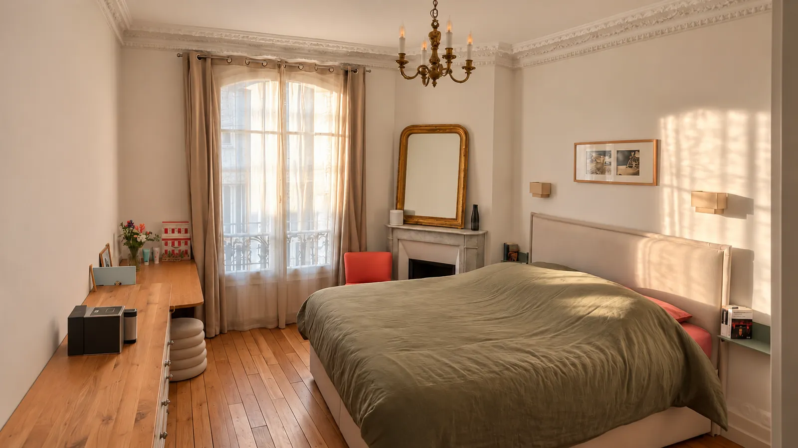

Stouls Studio / Pied-à-terre
A pied-à-terre in Paris, ready the day you land
You choose the neighborhood and the feeling. I find the apartment, redraw it for the way you live, and hand you a furnished home.
What North American owners ask for
Paris apartments were not laid out for the way most Americans and Canadians live. The requests come up again and again, and each has a Paris answer.
- A bathroom for each bedroom. Possible more often than sellers think, once the drainage is understood.
- A kitchen you can cook in, open to the living room.
- Cooling. Outdoor units are restricted on most Paris façades, so the options are decided building by building.
- Closets. Built-in cabinetry, drawn to fit, because the rooms are not square.
- A washer and a dryer, somewhere that is not the kitchen.
- Quiet. Double-pane windows that the building and the city will accept.
A BARNES agency director reports three of these requests from American buyers: bedrooms with their own bathroom, a fitted kitchen and air conditioning (BARNES, 2026).

Keeping what made you want Paris
Moldings, chevron oak floors, marble fireplaces, tall windows. They are why you are buying here and they are easy to lose in a renovation done quickly.
The studio’s work keeps them and builds around them: arched openings, limewashed walls, cane-fronted cabinets, color used on millwork and in small rooms.
Questions about owning a pied-à-terre
What is a pied-à-terre?
A second home in a city, kept for regular short stays, not as a primary residence. The French means “foot on the ground.” In Paris it is usually a one- or two-bedroom apartment in a central neighborhood.
How long can I stay in my apartment each year?
Owning property gives no right of residence. US and Canadian citizens can stay in the Schengen area for up to 90 days in any 180-day period without a visa. Longer stays need a French long-stay visa.
Who looks after it when I am away?
I can hand over to a concierge or property manager for cleaning, mail and checks. Ask me for the ones my clients use.
Can I rent it out when I am not there?
Short tourist rentals of a second home are tightly restricted in Paris. Longer furnished leases are possible. The buyer’s guide sets out the rules.